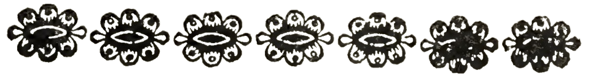
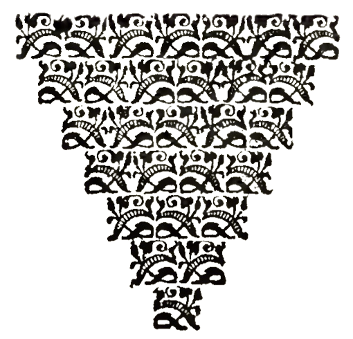

Drawing on a broad base of knowledge about library resources and services, I answer in-person and virtual reference inqueries for the students, faculty, staff, and members of the public who use the college's central research library.
Focusing on manuscript collections related to maritime and trade history in New England, I arrange, describe, and create DACS-compliant finding aids using ArchiveSpace.
I use Voyager to catalog manuscript collections and ship logbooks.
Using the library's high-resolution digitization equipment and its digital asset management systems Piction and Quartex, I photograph, record metadata for, and create digital exhibits to display the library's manuscript collections.
Using the library's high resolution digitization equipment and its digital asset management systems NetX and Quartex, I digitized, created metadata for, and curated the Hawthorne Collection, a digital exhibit showcasing the library's collection of manuscripts, rare books, ephemera and photographs related to Nathaniel Hawthorne and Sophia Peabody Hawthorne.
I created metadata for over 1000 photographs in the Samuel Chamberlain Photograph Negatives Collection in preparation for their digitization by Digital Commonwealth. For this task, I used Dublin Core, LCSH, and LCNAF.
I also inventoried several hundred glass plate negatives and lantern slides.
I prepare archival materials for digitization, including performing basic preservation tasks, identifying appropriate digitization workflows, and creating instructions for digitization technicians. I also perform quality control after digitization.
Using AAT, LCSH, and LCNAF, I catalog digitized photographs for JSTOR Forum.
I arranged, described, and, using ArchivesSpace, created a DACS-compliant finding aid for the Records of the United Methodist Church of Moodus, Connecticut, 1836-2019. (~1.85 linear feet)
I arranged, described, and created a DACS-compliant finding aid for the Barbara Gaffin papers. (~2.5 linear feet)
I also assisted with curating a digital exhibit to showcase the oral history project, "Jewish Neighborhood Voices." I read about 30 oral history transcripts and then identified and digitized about 100 photographs and other visual materials for the digital exhibit.
During this internship, I accessioned, arranged, described, and, using ArchivesSpace, created a DACS-compliant and EAD-encoded finding aid for the Hillsborough Center Congregational Society records, 1840-2022. (~1 linear foot)
Upon completion of the internship, I delivered a Zoom presentation about my work, "Making Church Records Accessible: Reflections from an Archives Internship."
As a scholar of early modern English literature, I have conducted research in numerous libraries and archives, including the British Library, the Newberry Library, the Folger Shakespeare Library, and the Huntington Library.
From 2014 to 2017, I served on the Library Committee at Walla Walla University, and from 2016 to 2017, I acted as the committee's faculty chair.
In April 2022, I was invited to deliver Walla Walla University's William Landeen Library Lecture, an annual lecture that heightens awareness about how faculty scholarship relates to library sources and services. My lecture focused on my use of Early English Books Online (EEBO) in my research.
